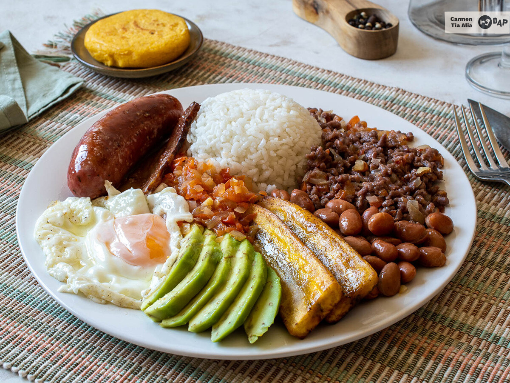

Difficulty: Easy, Total time 1 h, Elaboration 30 min, Cooking 30 min
This is a simple recipe, but composed of many elaborations. We start with two of them ready: the white rice and the red beans in canned. The first we did it early in the morning and the second we bought ready to drain and consume. With this, at the time of assembly of the plate, we can go faster. We started by preparing a sofrito of onion and tomato that is called hogao"hogao". For this we finely chop the onion and also the tomatoes. Heat a little oil in a pan and poach them for about 14-15 minutes or until tender. We're peppering.
At the same time we prepare the sausages and the bacon, which we brown in another pan with a pinch of oil. We start with the sausages, over low heat, which take longer to do. Then we incorporate the bacon cut into two pieces and fry it until it is well golden brown. We reserve. We can also sauté the minced meat in a third pan with a splash of oil, stirring to make it cook equally. When the sofrito or "hogao" is ready, we add a quarter to the meat, pepper it and reserve it.
On the other hand we prepare the male banana. We peeled it and cut it in half. Then we laminate each half and fry in a pan, over medium-high heat, with a generous amount of olive oil. When it is tender we remove it to a plate with absorbent paper and pepper it.
Cut the avocado in half, peel it and laminate it. Finally, fry two fried eggs in a pan with plenty of olive oil. All this is left to just mount the paisa tray, distributing all the elements in two dishes: rice, minced meat, red beans, fried banana, avocado, fried egg, sofrito or "hogao", chorizo and bacon.
We accompany the whole with one or two arepas. To prepare them, insert the hot water into a bowl, add a pinch of salt and the precooked corn flour. Stir until we obtain a homogeneous mass that we let stand for about ten minutes, so that it takes body. We divide it into four, form the arepas and cook them in a strong-fired iron between three and four minutes on each side.